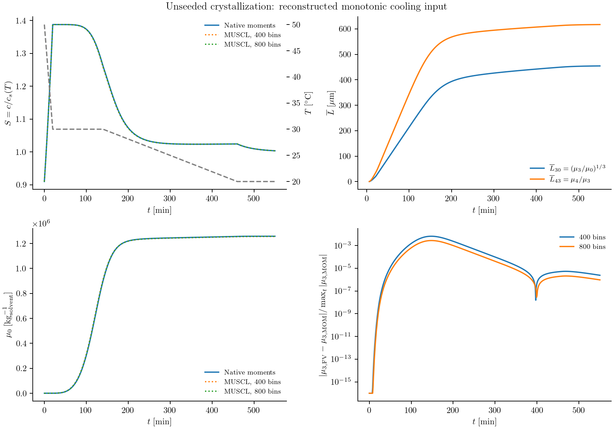

Crystal growth under a temperature program
A cooling policy changes both how many crystals form and how much material each crystal acquires. If the quantities we need are total number, crystal material, and mean sizes, a few moments may be enough. Resolving every size bin is useful when fines counts or the full product distribution are needed instead.
This calculation uses the paracetamol–ethanol kinetics of Kim, Kawajiri, Rousseau, and Grover (2023). It compares native moment equations with a sectional calculation during monotonic cooling. The cooling history is reconstructed from the noncycling side of Figure 13; it is an illustrative model calculation, not a verified reproduction of that figure. The distinction matters because Figure 13 also includes extinction of fines and distributions that a few raw moments do not determine.
From the population balance to five ODEs
Let $f(L,t)$ count crystals per µm and kg of solvent. With size-independent velocity $G(t)$, the interior equation is
\[\frac{\partial f(L,t)}{\partial t} +\frac{\partial[G(t)f(L,t)]}{\partial L}=0.\]
When supersaturated, primary and secondary nuclei enter at zero size with total inward number flux $B_1+B_2$. Define
\[\mu_j(t)=\int_0^\infty L^jf(L,t)\,dL.\]
Provided no particles disappear through zero size and the upper boundary is unpopulated, the moment equations are
\[\frac{d\mu_0(t)}{dt}=B_1(t)+B_2(t),\qquad \frac{d\mu_j(t)}{dt}=jG(t)\mu_{j-1}(t),\quad j=1,2,3,4.\]
The source at zero size adds no higher moments. Because growth is independent of size, each equation depends only on lower tracked moments. ExactClosure therefore assembles these equations without a distribution reconstruction. Their numerical time integration still has error.
The free-solute balance is
\[\frac{dc(t)}{dt}=-q\frac{d\mu_3(t)}{dt}=-3qG(t)\mu_2(t), \qquad q=\rho_c k_v\,10^{-15}.\]
Here $c$ is g solute/g solvent, $\rho_c$ is in g/cm³, and $k_v$ is the volume shape factor. The conversion includes $10^{-12}$ cm³/µm³ and $10^{-3}$ kg/g: the moments are per kg of solvent. The invariant is $c+q\mu_3$.
Supply the kinetic laws
The supporting-information solubility correlation uses temperature in kelvin:
\[c_s(T)=-8.707+0.09669T-3.610\times10^{-4}T^2+4.590\times10^{-7}T^3.\]
For $S=c/c_s(T)>1$, the nucleation rates are
\[B_1=k_{b1}\exp\left[-\frac{16\pi V_m^2\sigma^3} {3(k_BT)^3(\ln S)^2}\right],\qquad B_2=k_{b2}(S-1)^\alpha m_s^\beta,\qquad m_s=q\mu_3.\]
Both rates are zero below saturation. This implementation takes $m_s$ in g/g, as described beside the source paper's equation 6. Growth and dissolution are
\[G(t)=\begin{cases} k_g\exp[-E_{a,g}/(RT)]\,[c(t)-c_s(T)]^{\gamma_g},&c\ge c_s,\\ k_d\exp[-E_{a,d}/(RT)]\,[c_s(T)-c(t)]^{\gamma_d},&c<c_s. \end{cases}\]
The reported $k_d$ is negative. Time is in minutes, so $G$ is in µm/min. The recipe stores the constants in Tables 2 and 6; interfacial energy is converted from mJ/m² to J/m² before evaluating the nucleation barrier. Molecular volume is calculated from molar mass, density, and Avogadro's constant.
using PopulationBalanceModels
include(joinpath(pkgdir(PopulationBalanceModels),"examples","temperature_programmed_crystallization.jl"))
import .TemperatureProgrammedCrystallization
const recipe = TemperatureProgrammedCrystallization
p = recipe.parameters(density=1.293)(density = 1.293, shape_factor = 0.797, molar_mass = 151.16, Vm = 1.941276762521258e-28, material_factor = 1.030521e-15, kb1 = 10.6, sigma = 0.00383, kb2 = 1.39e6, alpha = 2.39, beta = 0.41, kg = 2.26e8, Eag = 36200.0, gamma_g = 1.14, kd = -40800.0, Ead = 9800.0, gamma_d = 0.93)Density 1.293 g/cm³ is an explicit material assumption for this illustration; it is not estimated here or confirmed by a numerical value in the supplied paper. The shape factor 0.797 and kinetic constants come from the paper.
Declare the moment representation
The builder uses the same physical declarations as a sectional model. It makes the size independence visible through PolynomialRate:
model = PBMModel(
growth=Growth(rate=PolynomialRate((recipe.growth_velocity,))),
primary=Nucleation(rate=recipe.primary_rate,size=0.0),
secondary=Nucleation(rate=recipe.secondary_rate,size=0.0),
)
operator = compile(model,MomentSet(0:4;coordinate=:length);method=ExactClosure())
term_methods(operator)(growth = ExactMomentRule(), primary = ExactMomentRule(), secondary = ExactMomentRule())recipe.secondary_rate reads moment(ctx,3), so it does not assume a bin layout. The concentration uses a moment exchange:
system = PBMSystem((crystals=operator,);
fields=(p,t)->(T=temperature(t),),nonnegative_bulk=(:c,),
exchanges=(MomentExchange(:crystals,:c,3;
factor=(p,t,ctx)->p.material_factor,mechanisms=(:growth,)),))MomentExchange obtains the third-moment derivative from the selected term rule. It does not estimate that derivative by differencing saved values.
Initialize a clear solution and prescribe cooling
The five moments start at zero. For the illustrated calculation we use $c(0)=0.300$ g/g and these graph-read temperature knots:
| Time (min) | 0 | 20 | 140 | 460 | 550 |
|---|---|---|---|---|---|
| Temperature (°C) | 50 | 30 | 30 | 20 | 20 |
temperature = recipe.linear_temperature([0.,20.,140.,460.,550.],
[50.,30.,30.,20.,20.])
problem = recipe.build_moments(;p,c0=0.300,temperature_profile=temperature,
tspan=(0.0,550.0),initial_moments=zeros(5))These knots and the initial concentration are reconstructed inputs, not an author-supplied numerical protocol. They are recorded alongside the results. The example therefore tests the two numerical representations for a fully stated input set; agreement with the publication's curves remains unverified.
Compare the numerical representations
The runner advances the moment system at steps 0.02 and 0.01 min, and the sectional system with MUSCL on 400 and 800 bins over 0–2000 µm. The upper size boundary is checked for negligible population. Saved moments and concentration must be finite and nonnegative; saved native moments must also pass the necessary Hankel realizability checks. Intermediate explicit RK moment vectors are not projected onto a realizable distribution; their checks are disabled for this diagnostic and step refinement is reported explicitly.
The displayed mean sizes are
\[\overline L_{30}(t)=\left[\frac{\mu_3(t)}{\mu_0(t)}\right]^{1/3},\qquad \overline L_{43}(t)=\frac{\mu_4(t)}{\mu_3(t)}.\]
They are undefined in the initial empty state, which is omitted from these curves. The lower-right panel compares the sectional material moment with the native moment solution, normalized by the maximum reference third moment so the initially empty population does not produce an undefined relative error. All panels use the same explicit input choices.

julia --project=. examples/temperature_programmed_crystallization.jl
python docs/benchmarks/plot_case_studies.py moments --usetexWhat the cycling comparison still needs
Figure 13 uses a resolved CE/SE calculation to report supersaturation, two moment-based means, counts below 150 µm, total count, and final volume density. The finite set $\mu_0,\ldots,\mu_4$ determines the means but not the fines count or final distribution.
During dissolution the exact number equation has an additional boundary term:
\[\frac{d\mu_0(t)}{dt}=B_1(t)+B_2(t)+G(t)f(0,t).\]
When $G<0$ the last term removes disappearing particles. Their boundary density is not determined by five moments. Setting it to zero would retain extinct crystals and bias both total number and $\overline L_{30}$. The authors used the moment method for nonextinguishing dissolution experiments and CE/SE for cycling calculations. Our raw-moment builder supplies no extinction closure; it must not be used to claim the full cycling result.
A complete Figure 13 reproduction therefore needs a resolved extinction boundary or a separately tested reconstruction/closure, the cycling protocol, consistent material and secondary-nucleation mass conventions, and a declared procedure for computing the final distribution. Those are additional scientific inputs and methods, rather than plotting options.
Complete runnable script
The code below is read from the example source during the documentation build. Run it from the repository root using the environment described above.
examples/temperature_programmed_crystallization.jl
module TemperatureProgrammedCrystallization
using PopulationBalanceModels
export parameters,solubility,linear_temperature,build_moments,build_sectional,run_comparison
const kB=1.380649e-23
const NA=6.02214076e23
const R=8.31446261815324
# Kelvin correlation from the supporting information; c is g solute/g solvent.
solubility(T)=-8.707+0.09669T-3.610e-4*T^2+4.590e-7*T^3
"""Published kinetic constants (Tables 2 and 6). Density is an explicit material input in g/cm³."""
function parameters(;density,shape_factor=0.797,molar_mass=151.16,
kb1=10.6,sigma=3.83e-3,kb2=1.39e6,alpha=2.39,beta=0.41,
kg=2.26e8,Eag=3.62e4,gamma_g=1.14,kd=-4.08e4,Ead=9.80e3,gamma_d=0.93)
all(x->isfinite(x) && x>0,(density,shape_factor,molar_mass)) || throw(ArgumentError("invalid material scales"))
Vm=molar_mass/(density*NA)*1e-6 # cm³ per molecule -> m³ per molecule
material_factor=density*shape_factor*1e-15 # µm³/kg solvent -> g/g solvent
(;density,shape_factor,molar_mass,Vm,material_factor,kb1,sigma,kb2,alpha,beta,
kg,Eag,gamma_g,kd,Ead,gamma_d)
end
"""Piecewise-linear temperature history; input values in °C, returned values in K."""
function linear_temperature(times,celsius)
times=float.(collect(times));values=float.(collect(celsius))
length(times)==length(values)>=2 && all(isfinite,times) && all(diff(times).>0) &&
all(isfinite,values) && all(values.>-273.15) || throw(ArgumentError("invalid temperature history"))
function temperature(t)
first(times)<=t<=last(times) || throw(ArgumentError("temperature requested outside supplied history"))
i=min(searchsortedlast(times,t),length(times)-1)
values[i]+(values[i+1]-values[i])*(t-times[i])/(times[i+1]-times[i])+273.15
end
end
function growth_velocity(p,t,ctx)
T=ctx.fields.T;cs=solubility(T);c=ctx.bulk.c
cs>0 || throw(ArgumentError("solubility correlation used outside its positive range"))
c>=cs ? p.kg*exp(-p.Eag/(R*T))*(c-cs)^p.gamma_g :
p.kd*exp(-p.Ead/(R*T))*(cs-c)^p.gamma_d
end
function primary_rate(p,t,ctx)
S=ctx.bulk.c/solubility(ctx.fields.T)
S<=1 && return 0.0
p.kb1*exp(-16π*p.Vm^2*p.sigma^3/(3*(kB*ctx.fields.T)^3*log(S)^2))
end
function secondary_rate(p,t,ctx)
S=ctx.bulk.c/solubility(ctx.fields.T)
S<=1 && return 0.0
mass=p.material_factor*moment(ctx,3)
mass>=0 || throw(NumericalFailure("negative crystal material in nucleation law"))
p.kb2*(S-1)^p.alpha*mass^p.beta
end
"""
Native moments 0:4 with a shared concentration. Zero-size nucleation and
size-independent signed growth give an exact closure ONLY while the number
flux at zero size vanishes. This builder supplies no extinction closure.
"""
function build_moments(;p,c0,temperature_profile,tspan,initial_moments=zeros(5))
model=PBMModel(
growth=Growth(rate=PolynomialRate((growth_velocity,))),
primary=Nucleation(rate=primary_rate,size=0.0),
secondary=Nucleation(rate=secondary_rate,size=0.0))
operator=compile(model,MomentSet(0:4;coordinate=:length);method=ExactClosure())
system=PBMSystem((crystals=operator,);fields=(p,t)->(T=temperature_profile(t),),
nonnegative_bulk=(:c,),exchanges=(MomentExchange(:crystals,:c,3;
factor=(p,t,ctx)->p.material_factor,mechanisms=(:growth,)),))
PBMProblem(system,(crystals=initial_moments,),tspan;bulk0=(c=c0,),p)
end
"""Closed-grid sectional comparison for the nonextinguishing cooling calculation."""
function build_sectional(;p,c0,temperature_profile,tspan,bins=800,scheme=MUSCL())
grid=Grid1D(range(0.0,2000.0;length=bins+1);coordinate=:length)
model=PBMModel(
growth=Growth(rate=(L,p,t,ctx)->growth_velocity(p,t,ctx)),
primary=Nucleation(rate=primary_rate,size=0.0),
secondary=Nucleation(rate=secondary_rate,size=0.0))
operator=compile(model,grid;methods=TermMethods(growth=scheme,
by_term=(primary=BoundaryInjection(:left),secondary=BoundaryInjection(:left))))
system=PBMSystem((crystals=operator,);fields=(p,t)->(T=temperature_profile(t),),
nonnegative_bulk=(:c,),exchanges=(ConservativeExchange(:crystals,:c,
(L,p,t,ctx)->p.material_factor*L^3;mechanisms=(:growth,:nucleation)),))
PBMProblem(system,(crystals=zeros(length(grid)),),tspan;bulk0=(c=c0,),p)
end
function quantities(problem,u)
op=problem.operator.system.populations.crystals
N=population(problem,u,:crystals)
mu=[moment(op.grid,N,k) for k in 0:4]
c=bulk(problem,u,:c)
(;mu,c,L30=mu[1]>0 ? cbrt(mu[4]/mu[1]) : NaN,
L43=mu[4]>0 ? mu[5]/mu[4] : NaN)
end
"""
Reconstructed noncycling input motivated by Figure 13 Case I, not an exact
reproduction of all four panels. The protocol and c0 are graph-read choices;
density=1.293 g/cm³ is an explicit material assumption, not a fitted parameter.
"""
function run_comparison(;output=joinpath(@__DIR__,"..","docs","src","assets","moment_crystallization"),
bins=(400,800),dt=0.02)
p=parameters(density=1.293)
temperature=linear_temperature([0.,20.,140.,460.,550.],[50.,30.,30.,20.,20.])
c0=0.300; times=collect(0.0:1.0:550.0)
prob=build_moments(;p,c0,temperature_profile=temperature,tspan=(0.0,550.0))
# Intermediate RK moment vectors need not themselves represent a PSD.
# Check saved states and convergence explicitly; never project or clip them.
reference=simulate(prob;dt=dt/2,saveat=times,check_nonnegative=false)
coarse=simulate(prob;dt,saveat=times,check_nonnegative=false)
refinement=maximum(abs.(last(reference.u).-last(coarse.u))./max.(abs.(last(reference.u)),eps()))
mkpath(output)
open(joinpath(output,"history.csv"),"w") do io
println(io,"method,bins,time,temperature_K,concentration,supersaturation,mu0,mu1,mu2,mu3,mu4,L30,L43,material_drift")
cases=Tuple{String,Int,Any,Any}[("moments",0,prob,reference)]
for n in bins
fv=build_sectional(;p,c0,temperature_profile=temperature,tspan=prob.tspan,bins=n)
push!(cases,("muscl",n,fv,simulate(fv;dt,saveat=times)))
end
for (method,n,problem,solution) in cases
if method=="muscl"
N=population(problem,last(solution.u),:crystals)
sum(N[end-2:end])/sum(N)<1e-8 || throw(ArgumentError("upper size boundary is populated; enlarge the domain"))
end
for (t,u) in zip(solution.t,solution.u)
q=quantities(problem,u)
all(x->isfinite(x) && x>=0,q.mu) || throw(NumericalFailure("invalid saved moments"))
method=="moments" && !realizability(problem.operator.system.populations.crystals.grid,q.mu).valid &&
throw(NumericalFailure("saved moments fail necessary Hankel checks"))
isfinite(q.c) && q.c>=0 || throw(NumericalFailure("invalid saved concentration"))
# The comparison has no dissolution of a populated distribution.
q.mu[1]>0 && q.c/solubility(temperature(t))<1-1e-7 &&
throw(ArgumentError("this comparison requires a vanishing extinction flux"))
println(io,join((method,n,t,temperature(t),q.c,q.c/solubility(temperature(t)),
q.mu...,q.L30,q.L43,q.c+p.material_factor*q.mu[4]-c0),','))
end
end
end
write(joinpath(output,"inputs.txt"),
"Kim et al. (2023), doi:10.1021/acs.iecr.2c03465. Kinetics: Tables 2 and 6; solubility: SI.\n"*
"ILLUSTRATIVE reconstruction of noncycling Figure 13 Case I, not full Figure 13 reproduction.\n"*
"Temperature knots (min, Celsius): (0,50),(20,30),(140,30),(460,20),(550,20); c0=0.300 g/g.\n"*
"Density assumed 1.293 g/cm^3; shape factor 0.797; molecular weight 151.16 g/mol.\n"*
"No extinction closure or PSD reconstruction is inferred from five raw moments.\n"*
"Julia $(VERSION); dt=$dt; native step-halving relative difference=$refinement\n")
println("Native moment step-halving difference: ",refinement)
reference
end
if abspath(PROGRAM_FILE)==@__FILE__;run_comparison();end
end